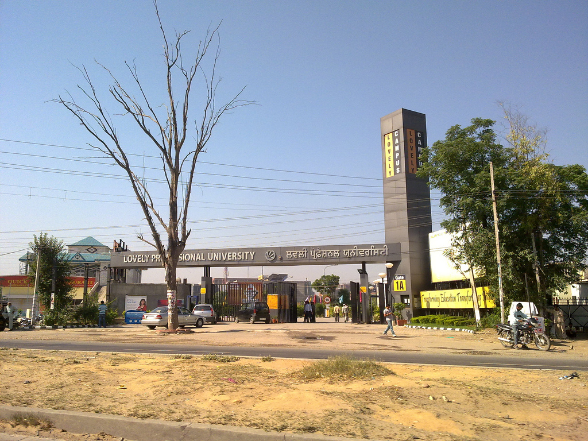

Lovely Professional University
From wikipedia, the free encyclopedia
Lovely Professional University (LPU) is a private university located in Chaheru, Phagwara, Punjab, India. The university was established in 2005 by Lovely International Trust, under The Lovely Professional University Act, 2005 (Punjab Act 25 of 2005)[4] and started operation in 2006.[5]
| Motto | "Transforming Education Transforming India" |
|---|---|
| Type | Private |
| Established | 2005 (16 years ago) |
| Chancellor | Ashok Kumar Mittal[1] |
| Vice-Chancellor | Dr. Preeti Bajaja[2] |
| Pro Chancellor | Rahmi Mittal[3] |
| Students | 30,000+ (2020) |
| Contents [hide] |
|---|
| 1 Campus |
| 2 Governance |
| 3 Affilations |
| 4 Schools |
| 5 Rankings |
| 6 Notes |
| 7 References |
| 8 External Links |
Campus
The university campus is spread over 600 acres[6] in Chaheru Village on the Jalandhar-Delhi GT Road.
Governance
The university is governed by chancellor Ashok Kumar Mittal.[7] The administration and operations are governed by pro-chancellor of the institution Rashmi Mittal.[8] Preeti Bajaj is the vice-chancellor of the university.[9]
Affiliations

LPU is affiliated with the University Grants Commission,[10] the National Council for Teacher Education[11] and the Council of Architecture[12] and approved by the Pharmacy Council of India.[13] It is also a member of the Association of Indian Universities (AIU).[14] The law programs are recognized by the Bar Council of India[15][16] LPU's School of Agriculture is accredited by the Indian Council of Agricultural Research (ICAR).[17] Internationally, LPU is accredited by the Accreditation Council for Business Schools and Programs (ACBSP)[18] and a member of the Association of Commonwealth Universities (ACU).[19] The distance education programmes are approved by the Distance Education Bureau (DEB).[20]